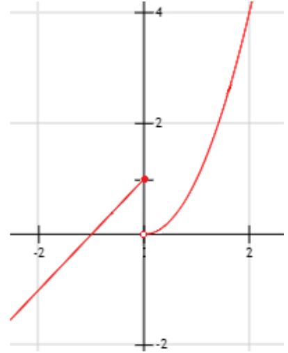

year ccode_e ccode_a logflow shareally sharecom atopally MID logflow.lag
1 1950 2 20 7.709084 9 1 1 0 7.675964
2 1950 2 40 6.224162 18 0 1 0 6.037871
3 1950 2 41 3.380995 18 0 1 0 3.310543
4 1950 2 42 3.854394 18 0 1 0 3.756538
5 1950 2 51 2.292535 NA NA NA 0 2.549445
6 1950 2 52 2.197225 NA NA NA 0 2.985682
loggdp.e loggdp.a logpop.e logpop.a logdist contig gatt.e gatt.a rta
1 12.56549 9.739733 5.025662 2.6398427 7.639785 1 1 1 0
2 12.56549 7.434257 5.025662 1.7552683 7.855788 0 1 1 0
3 12.56549 5.784440 5.025662 1.1304339 8.066461 0 1 1 0
4 12.56549 5.947513 5.025662 0.8556911 8.104875 0 1 1 0
5 12.56549 NA 5.025662 0.3257001 8.013994 0 1 0 0
6 12.56549 NA 5.025662 -0.4588658 8.420803 0 1 0 0
comcur comlang_off comleg jointdem sscore degcent_e degcent_a bilatno
1 0 1 1 1 0.6200000 62 22 0
2 0 0 0 0 0.4600000 62 40 0
3 0 0 0 0 0.6808510 62 40 0
4 1 0 0 0 0.6382979 62 40 0
5 0 1 1 0 NA 62 NA NA
6 0 1 1 0 NA 62 NA NA
multino logbet_e logbet_a ptarat ptaexist perptarat vetos
1 1 6.580639 0 0 0 0.006650832 0.39
2 1 6.580639 0 0 0 0.006650832 0.39
3 1 6.580639 0 0 0 0.006650832 0.39
4 1 6.580639 0 0 0 0.006650832 0.39
5 NA 6.580639 NA NA NA NA NA
6 NA 6.580639 NA NA NA NA NA
region pcw heg gdpchange USdum fdibi fdibi_lag jointIO Ebloc_e
1 North/Central America 0 NA NA 1 NA NA 40.8 0
2 North/Central America 0 NA NA 1 NA NA 40.8 0
3 North/Central America 0 NA NA 1 NA NA 41.5 0
4 North/Central America 0 NA NA 1 NA NA 41.4 0
5 <NA> NA NA NA NA NA NA NA 0
6 <NA> NA NA NA NA NA NA NA 0
Wbloc_e Ebloc_a Wbloc_a ddyad dyad sharecom.def allex imports
1 0 0 0 103.121 103.121 1 312.3181 7.650645
2 0 0 0 103.141 103.141 0 312.3181 6.079933
3 0 0 0 103.142 103.142 0 312.3181 3.252697
4 0 0 0 103.143 103.143 0 312.3181 3.737670
5 0 0 0 103.152 103.152 NA 312.3181 1.386294
6 0 0 0 103.153 103.153 NA 312.3181 2.397895Set Theory
Math and Programming Camp Session 1
The Big Question(s)
Does Democracy Cause Growth?
Term
Definition
Democracy → growth, cross-section 2020
Theory
A set of statements involving concepts
Democracy constrains executive predation and secures property rights → investment → growth
Concept
Abstract ideas used to understand the world
Democracy; economic growth
Measure
An operational indicator of a concept
V-Dem polyarchy index (0–1); average annual growth in log GDP per capita
Unit of analysis
The entity a row describes
The country (n ≈ 175)
Variable
Takes different values in the given set
polyarchy; growth; region
Constant
Single value in the given set
The year (2020); the planet; anything time-varying
Hypotheses
Hypothesis: a testable statement, derived from a theory, about the expected relationship between concepts or variables.
Hypothesis
Statement
Theoretical
Democracy causes higher economic growth
Empirical
Countries with higher democracy scores have higher average growth
Null
Average growth is the same in both groups
Rival
Growth causes democracy — same correlation, opposite arrow
Hence, theory to empirics
- Theory: (simplified) a set of statements that involve concepts.
- Concept: abstract ideas used to understand the world.
- Measure: an operational indicator of a concept
- Variable: A concept or measure that takes different values in a given set.
- Constant: A concept or measure that has a single value for a given set.
- Hypothesis: a testable statement, derived from a theory, about the expected relationship between concepts or variables.
- Let’s hear some ideas from your research areas!
Democracy and Growth, in the Data (V-Dem 2019)

Polyarchy (our measure of democracy) vs. GDP per capita, one dot per country. \(n = 174\).
The Same Data, as Sets
Polyarchy vs. GDP per capita, V-Dem 2019. n = 174.
Countries
{ , … }
Polyarchy
{ , … }
GDP per capita
{ , … }
showing 8 of 174 countries
Click to split the highlighted points into three sets →
All the Values It Could Take
- Every dot’s polyarchy score is some value between 0 and 1.
- The full range of values it could take — before we see any particular country — is its sample space.
- Same idea for GDP per capita: some positive number, no fixed upper bound in principle.
- Political scientists build claims about all of this range, not just the countries plotted here.
From the Picture to Notation
- Polyarchy \(\in [0,1]\) — the sample space, written formally.
- Each dot: one unit of analysis (a country), with a polyarchy value and a GDP value.
- The threshold used to split “democracies” from “non-democracies”: \(D = 1\{\text{polyarchy} > 0.5\}\).
- Where did 0.5 come from? (open question — we’ll come back to this)
- To make statements like this precise, we need the formal language of sets.
Sets and Sample Spaces
- A set is a collection of elements.
- Common sets: Natural numbers (\(\mathbb{N}\)), Integers (\(\mathbb{Z}\)), Rational numbers (\(\mathbb{Q}\)), Real numbers (\(\mathbb{R}\)), etc.
- A set can be:
- Finite or infinite: \(\mathbb{Z}\) is infinite, but all the integers from 1 to 10 is finite.
- Countable or uncountable: a countable set is one whose each of its elements can be associated with a natural number (or an integer).
- Bounded or unbounded: A bounded set has finite size (but may have infinite elements).
- Some important sets that we are going to use as political scientists:
- Solution set: a set that contains all solutions for an equation
- Sample space: a set that contains all values that a variable can take.
Unions and Intersections
- Much as sets contain elements, they also can contain, and be contained by, other sets.
- Notation:
- \(A \subset B\): “A is a proper subset of B” implies that set B contains all the elements in A, plus at least one more
- \(A \subseteq B\): “A is a subset of B”. In this case, it allows A and B to be the same.
- Intersection: \(A \cap B\). The set of elements common to two sets.
- Union: \(A \cup B\). The set that contains all elements in both sets.
- Mutually exclusive sets: the intersection is the empty set.
\(A \subset B\) (Proper Subset)
\(A \cap B\) (Intersection)
\(A \cup B\) (Union)
\(A \cap B = \emptyset\) (Mutually Exclusive)
Levels of Measurement
- Categorical
- Nominal: No mathematical relationship; difference of kind.
- Occupation, colors, political party, gender
- Ordinal: Meaningful order, no meaningful “distance” between categories.
- Ideology, agree/disagree, education level
- Nominal: No mathematical relationship; difference of kind.
- Numerical
- Interval: Meaningful order and distance between values.
- Age, budget, polity scores, vote share, feeling thermometer
- Discrete: countable
- Continuous: non-countable
- Ratio: meaningful zero (re-scaled thermometer)
- Interval: Meaningful order and distance between values.
Why it Matters
- Visualization
- Categorical: pie charts, bar charts
- Numerical (especially continuous): histograms, box plots
- Analysis
- Numerical data can use summary statistics (mean, median, standard deviation)
- Categorical – Categorical: cross-tabulation
- Categorical – Continuous: difference in means
- Continuous – Continuous: scatter plots, regression
Basic Properties of Arithmetic
For variables that stand for real numbers or integers, these properties will always hold:
- Associative properties:
- \((a+b)+c=a+(b+c)\)
- \((a \cdot b)\cdot c=a \cdot (b \cdot c)\)
- Commutative properties:
- \(a+b=b+a\)
- \(a \cdot b = b \cdot a\)
- Distributive properties:
- \(a \cdot (b+c)=ab+ac\)
- Identity properties:
- \(a+0=a\)
- \(a \cdot 1 = a\)
- Inverse properties (for real numbers, not integers):
- \((-a) + a = 0\)
- \(a^{-1} \cdot a = 1\)
Order of Operations
PEMDAS:
- Parentheses ()
- Exponents (\(x^{n}\))
- Multiplication (\(\cdot\))
- Division (\(\div\))
- Addition (\(+\))
- Subtraction (\(-\))
Inequalities
- All pairs of real numbers have exactly one of the following relations: \(x=y\), \(x>y\), or \(x<y\).
- Solving inequalities is similar to solving equations, but there are a few extra properties.
- Adding any number to each side of these relations will not change them; this includes inequalities.
- Multiplication:
- If \(a\) is positive and \(x>y\), then \(ax>ay\).
- If \(a\) is negative and \(x>y\), then \(ax<ay\).
- Division:
- If \(a\) is positive and \(x>y\), then \(\frac{x}{a}>\frac{y}{a}\).
- If \(a\) is negative and \(x>y\), then \(\frac{x}{a}<\frac{y}{a}\).
Exponents, Logarithms, and Roots
- Exponential: \(x^{a}\)
- Roots: \(\sqrt[a]{x}\)
- All roots can be expressed as fractional exponents
- \(\sqrt[a]{x} = x^{1/a}\)
- Logarithm: inverse of exponents, \(\log_{a}x\)
- To what power would you need to raise \(a\) to get \(x\)?
- Natural log: log base \(e\)
- \(e \approx 2.7183\)
- Useful properties in calculus
- Taking the natural log of a variable allows us to interpret relationships in terms of percentage changes
Exponent, Logarithm, and Root Rules
Exponent rules
- \(x^{a} \cdot x^{b}=x^{a+b}\)
- \(x^{a} \cdot z^{a}=(xz)^{a}\)
- \((x^{a})^{b}=x^{ab}\)
- \(\frac{x^{a}}{x^{b}}=x^{a-b}\)
- \(\frac{x^{a}}{z^{a}}=\left(\frac{x}{z}\right)^{a}\)
Logarithm rules
- \(\log(x_{1} \cdot x_{2})=\log(x_{1})+\log(x_{2})\) for \(x_{1},x_{2}>0\)
- \(\log\left(\frac{x_{1}}{x_{2}}\right)=\log(x_{1})-\log(x_{2})\) for \(x_{1},x_{2}>0\)
- \(\log(x^{b})=b \cdot \ln(x)\) for \(x>0\)
Exponent, Logarithm, and Root Rules — Root Rules
Root rules
- \(\sqrt{x}=x^{\frac{1}{2}}\)
- \(\sqrt[n]{x} \cdot \sqrt[n]{z}=\sqrt[n]{xz}\) for \(n>1\)
- \(\frac{\sqrt[n]{x}}{\sqrt[n]{z}}=\sqrt[n]{\frac{x}{z}}\) for \(n>1\)
Functions and Their Characteristics
- Functions provide a specific description of the association or relationship between two (or among several) concepts (in theoretical work) or variables (in empirical work)
- Functions assign one element of the range to an element of the domain (no \(x\) can be assigned to multiple \(y\))
- Noted as \(f(x):A \rightarrow B\) or “f maps A into B”
- \(A\) is the domain, or set of possible \(x\) values.
- \(B\) is the codomain, or set of possible \(y\) values.
- To be a function, there must only be one unique value in its range (\(y\)) for each value in its domain (\(x\))
Graph Examples
In which of these graphs can we observe a function?


Graph Examples — Answer
a) and d) are functions — for every \(x\) there’s exactly one \(y\).
Function Composition
- We can chain multiple functions using function composition.
- This is written either as \(g \circ f(x)\) or \(g(f(x))\).
- It is read as “\(g\) composed with \(f\)” or “\(g\) of \(f\) of \(x\)”
- Generally, \(g \circ f(x) \neq f \circ g(x)\)
- Example: Suppose \(f(x)=2x\) and \(g(x)=x^{3}\)
- \(g \circ f(x)=(2x)^{3}=8x^{3}\)
- \(f \circ g(x)=2(x^{3})=2x^{3}\)
Examples of Functions of One Variable — Linear Equation

- This is the classic linear equation \(y=a+bx\) or \(y=mx+n\)
- \(a\) and \(b\) are constants and \(x\) is the variable.
- \(a\) is the intercept and \(b\) is the slope of the line, or the amount that \(y\) changes given a one-unit increase in \(x\).
Examples of Functions of One Variable — Quadratic Function

- This is the classical quadratic function: \(f(x)=ax^{2}+bx+c\) or \(f(x)=\alpha+\beta_{1}x+\beta_{2}x^{2}\)
- If we set \(a>0\) (\(\beta_{2}>0\)) we get a curve shaped like a U (a convex parabola).
- If we set \(a<0\) (\(\beta_{2}<0\)) we get a curve shaped like an inverse U (a concave parabola).
Exponent, Logarithm, and Root Graphs


Functions and Theorizing
- Functions are important for theorizing about politics
- Most quantitative social science boils down to how two variables relate!
- Our examples suggest a precise function between \(x\) and \(y\)
- In statistics, you will theorize the functional form of the relationship
- Statistical methods will estimate the most appropriate parameters; “a line of best fit”
Anscombe’s Quartet

Solving Equations
- Isolate the variable you are looking for
- Combine like terms
- Factor and cancel
- Operate on both sides of the equation
- Check your answer
Special Products
- \((a+b)^{2}=a^{2}+2ab+b^{2}\)
- \((a-b)^{2}=a^{2}-2ab+b^{2}\)
- \((x+a)(x+b)=x^{2}+(a+b)x+ab\)
- \((a+b)(a-b)=a^{2}-b^{2}\)
- \((a+b+c)^{2}=a^{2}+b^{2}+c^{2}+2(ab+ac+bc)\)
- \((a+b)^{3}=a^{3}+3a^{2}b+3ab^{2}+b^{3}\)
Factoring
Factoring: rearranging terms in an equation to make it simpler.
\[\frac{3x^4 + 3x^3 - 6x^2}{6x^2 + 12x}\]
\[\frac{3x^2(x^2 + x - 2)}{6x(x+2)}\]
\[\frac{3x^2(x + 2)(x - 1)}{6x(x + 2)}\]
\[\frac{3x^2(x - 1)}{6x}\]
\[\frac{x(x - 1)}{2}\]
Quadratics and Special Products
Quadratic polynomials can be factored into the product of two terms: \((x\pm?) \times (x\pm?)\)
\[x^2 - 8x + 16 = 9\]
\((x\pm?) \times (x\pm?) = x^2 - 8x + 16\)
\[(x - 4)^2 = 9\]
\[(x - 4) = \pm 3\]
\[x = 4 \pm 3\]
\(x = 1\) OR \(x = 7\)
Why Two Solutions?

Another Example
\[x^2 + 7x = -12\]
\[x^2 + 7x + 12 = 0\]
How can we use special products here? Find \(a\) and \(b\):
\[(x + a)(x + b) = x^2 + (a+b)x + ab\]
\[(x + 3)(x + 4) = 0\]
Either \(x + 3 = 0\) OR \(x + 4 = 0\)
\(x = -3\) OR \(x = -4\)
Quadratic Formula
Useful if special products can’t easily be found!
\[3x^2 + 8x - 13 = 0\]
\[x = \frac{-b\pm\sqrt{b^2-4ac}}{2a}\]
Quadratic Formula — Worked Example
\[3x^2 + 8x - 13 = 0\]
\[x = \frac{-8\pm\sqrt{8^2-(4 \cdot 3 \cdot -13)}}{2 \cdot 3}\]
\[x = \frac{-8 + \sqrt{220}}{6}\]
\[x \approx 1.14\]
\[x = \frac{-8 - \sqrt{220}}{6}\]
\[x \approx -3.81\]
Checking Our Work Graphically

Sequences and Series
- A sequence is an ordered list of numbers
- A sequence can be infinite, such as \(\{1,2,3,4,\dots\}\)
- Or a sequence can be finite, such as \(\{5,10,15,20,25\}\)
- A series is the sum of a sequence.
- Typically noted as \(\sum_{i=1}^{N}x_{i}\), which means add the terms in the sequence beginning at \(x_1\) and stopping at \(x_N\).
- For an infinite sequence, \(N=\infty\)
Limits
- Limits help us describe the behavior of a sequence, series, or function as it approaches a given value.
- A sequence/series/function converges if it has a finite limit.
- A sequence/series/function diverges if it has no limit or the limit is \(\pm\infty\)
- The limit of a sequence is the number \(L\) such that as we approach infinity, \(x_i\) gets arbitrarily close to \(L\). Noted as: \(\lim_{i\to\infty} x_{i}=L\)
- Example of the limit of a sequence:
- The limit of the sequence \(\{i\}_{i=1}^{\infty}\) does not have an “endpoint” and approaches infinity, so it diverges.
- The limit of the sequence \(\left\{\frac{3}{10^{i}}\right\}_{i=1}^{\infty}\) approaches zero as \(i \to \infty\), so it converges.
Limits (continued)
- The limit of a series is similar, but you are not looking for an “endpoint”. In this case, you are looking for the sum of all elements in an infinite sequence. For example:
- \(\lim_{n\to\infty} \sum_{i=1}^{n} i= \infty\). So, this series is divergent.
- \(\lim_{n\to\infty} \sum_{i=0}^{n} \frac{1}{2^{i}}\). This series converges. Where?
- For a function \(y=f(x)\), the limit is the value of \(y\) that the function tends towards as small steps are taken towards a value \(x=c\)
- Piecewise function: the function (relationship between \(x\) and \(y\)) is different for different parts of the domain
Piecewise Function Example
Estimate the value of the following limits: \(\lim_{x\to 0^{-}} f(x)\) and \(\lim_{x\to 0^{+}} f(x)\) for the function:

\[f(x) = \begin{cases} x+1 & x\leq 0 \\ x^{2} & x > 0 \end{cases}\]
\[\lim_{x\to 0^{-}} f(x) =\lim_{x\to 0^{-}} x+1 = 1\]
\[\lim_{x\to 0^{+}} f(x) =\lim_{x\to 0^{+}} x^{2} = 0\]
Limit Example
- The function \(f(x) = \frac{1}{x-5}\) is undefined at which value of \(x\)?
- The function \(f(x)\) has a limit at \(x = 5\)
- What is the value of \(\lim_{x\to 5} f(x)\)?
- Does that value change whether we approach the limit from the negative or positive side?
- Functions are continuous if they do not have sudden breaks, and discontinuous otherwise
Math Camp Exercises — Day 1
- M&S Chapter 1: Exercises 3, 5
- M&S Chapter 2: Exercises 16, 17, 19, 20, 21, 22, 26, 29
- M&S Chapter 3: Exercises 2, 3
- M&S Chapter 4: Exercises 3, 4, 5, 6, 9
Dataset preparation
Dataset
This sample dataset is adapted from the replication data accompanying:
Haim, Dotan. 2016. Alliance Networks and Trade: The Effect of Indirect Political Alliances on Bilateral Trade Flows. Journal of Peace Research.
The original replication files and codebook are available through the Journal of Peace Research replication archive and the author’s website. This version retains a subset of variables for instructional purposes and adds country names and abbreviations by merging the Correlates of War (COW) country code list.
Variables
| Variable | Description |
|---|---|
year |
Year of the observation. |
ccode_e |
Correlates of War (COW) numeric country code for the exporting (ego) state. |
StateAbb_export |
Three-letter country abbreviation for the exporting state (added from the COW country code list). |
StateNme_export |
Country name for the exporting state (added from the COW country code list). |
ccode_a |
Correlates of War (COW) numeric country code for the importing (alter) state. |
StateAbb_import |
Three-letter country abbreviation for the importing state (added from the COW country code list). |
StateNme_import |
Country name for the importing state (added from the COW country code list). |
logflow |
Natural logarithm of exports from the exporting state to the importing state, measured in millions of standardized U.S. dollars. Data originate from the CEPII Trade dataset. |
shareally |
Number of alliance ties jointly shared by both members of a dyad, adjusted for allies unique to the importing state. This variable measures indirect alliance embeddedness. |
MID |
Indicator for whether the two states were involved in a Militarized Interstate Dispute (MID) during the observation year. |
loggdp.e |
Natural logarithm of the exporting state’s gross domestic product (GDP), measured in millions of standardized U.S. dollars. |
loggdp.a |
Natural logarithm of the importing state’s gross domestic product (GDP), measured in millions of standardized U.S. dollars. |
comcur |
Indicator for whether the two states share a common currency. |
sscore |
Affinity (S-) score measuring similarity in the two states’ United Nations General Assembly voting behavior. |
region |
Geographic region of the exporting state. Categories include East Asia and Pacific, South Asia, Middle East and North Africa, Sub-Saharan Africa, Europe and Central Asia, Latin America and Caribbean, North/Central America, and Western Europe. |
bilatno |
Indicator for whether the two states are partners in at least one bilateral alliance. |
multino |
Indicator for whether the two states are partners in at least one multilateral alliance. |
Notes
- Each observation represents a directed country dyad-year, where an exporting state trades with an importing state.
- Variables beginning with
.erefer to characteristics of the exporting (ego) state, whereas variables beginning with.arefer to the importing (alter) state. StateAbb_*andStateNme_*were added to improve readability and are not part of the original Haim (2016) replication dataset.
Programming lecture: webpage chapter
MathCamp 2026